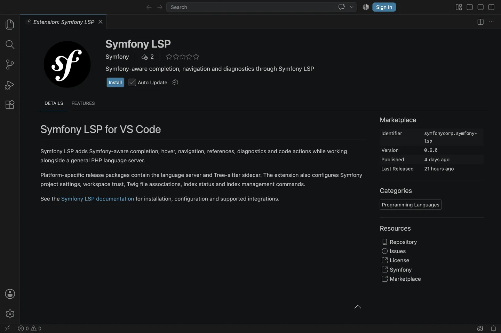
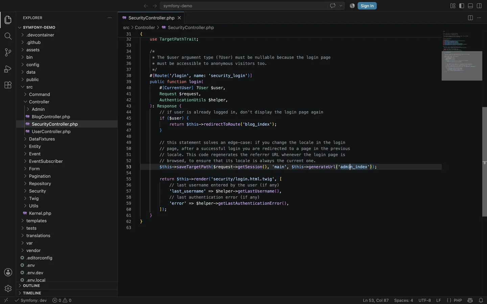
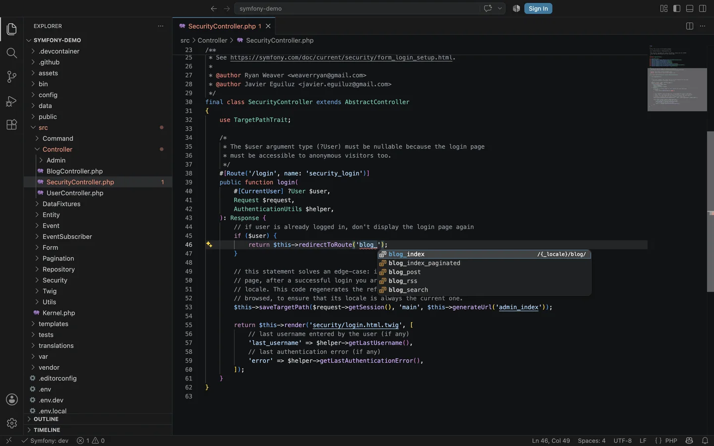
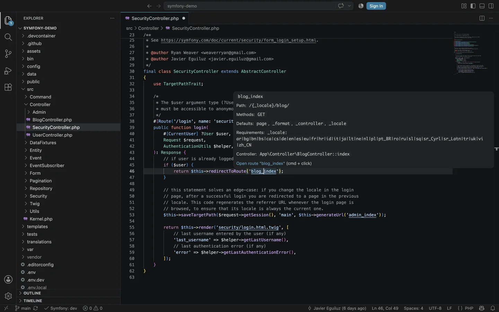
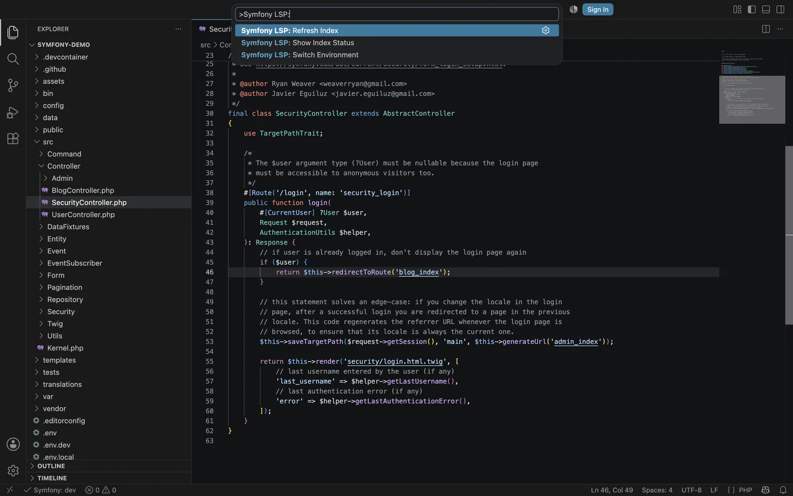

Symfony knowledge beside your PHP tools
Symfony LSP adds framework-specific completion, hover, navigation, references, rename, diagnostics and code actions. Keep your general PHP language server enabled for PHP types, methods and syntax checks.
-
One-time setup
Install Symfony LSP
Open the Extensions view with Ctrl + Shift + X on Windows or Linux, or Cmd + Shift + X on macOS. Search for Symfony LSP, verify that the publisher is Symfony and select Install.
Terminal alternativecode --install-extension symfonycorp.symfony-lspNo server path is needed. Marketplace packages contain the language server and Tree-sitter sidecar for the extension host's platform.
Select Install on the extension published by Symfony. The page also shows the extension identifier, version and repository link. -
Public example
Set up Symfony Demo
The screenshots use the public Symfony Demo application. Clone it, install its dependencies and open the application root in VS Code:
Terminalgit clone https://github.com/symfony/demo.git symfony-demo cd symfony-demo/ composer install code .If VS Code asks whether you trust the authors, review the folder and select Yes, I trust the authors. Runtime indexing boots the Symfony kernel, so leave an unknown workspace untrusted. An untrusted application still gets source-only features.
Open the project root. The Explorer should showcomposer.json,bin/console,src/andtemplates/at the top level. -
Project discovery
Wait for both indexes
Open a PHP file such as
src/Controller/SecurityController.php. Symfony LSP first scans application source, then reads effective metadata from thedevenvironment. Progress appears in the VS Code status bar.Continue when the lower-left status item reads Symfony: dev with a check mark. Select that item at any time to see the source and runtime index states.
What the status means:Symfony: devmeans both indexes are ready for the selected environment.Symfony: staticmeans runtime indexing is unavailable, disabled or not trusted.
The check mark next to Symfony: dev confirms that source and trusted runtime metadata are ready for the active Symfony Demo file. -
First feature
Complete a real route name
In
src/Controller/SecurityController.php, find the call toredirectToRoute('blog_index'). Replace the route name withblog_, keep the cursor after the underscore and invoke completion.Ctrl + Space Show suggestions ↑ ↓ Choose a route Enter Insert itThe list contains effective routes from Symfony's router, not words collected from the current file. Choose
blog_indexto restore the original route. This works in recognized controller and router calls as well as Twig'spath()andurl()functions.
Typing blog_ narrows the effective route collection to matching routes. The selected item also shows the route path when available. -
Understand and move
Inspect the route, then navigate
Pause the pointer over
blog_index. The hover card shows its path, HTTP methods, defaults, requirements and controller. You can inspect a route without leaving the call site or opening the Symfony profiler.F12 Go to Definition Cmd + click on macOS Ctrl + click on Windows or Linux Shift + F12 Find All ReferencesGo to Definition opens the matching
#[Route]declaration insrc/Controller/BlogController.php. Find All References lists static PHP and Twig usages. The same workflow applies to templates, translations, services, parameters and other supported Symfony values.
Hover combines the route's effective runtime details with the source location that Go to Definition can open. -
Practice trail
Try the other integrations
Symfony Demo contains realistic examples across PHP, Twig, YAML, translations, Doctrine and Symfony UX. Use these files to learn the same completion, hover and navigation loop:
TemplatesHover
blog/post_show.html.twiginBlogController.php, then press F12.Twig routesOpen
templates/blog/index.html.twigand completepath('blog_').TranslationsHover
paginator.previousin the same Twig file and open its translation resource.Dependency injectionIn
config/services.yaml, complete service references after@or parameters after%.DoctrineMove between
PostandPostRepositorywith their entity and repository code lenses.DiagnosticsTemporarily type a missing route or template name, inspect the error and undo the edit.
Twig editing is complementary. Symfony LSP supplies Symfony-aware data. A Twig extension can still provide syntax highlighting, formatting and generic Twig completion. -
Day-to-day controls
Manage the index from VS Code
Open the Command Palette with Ctrl + Shift + P on Windows or Linux, or Cmd + Shift + P on macOS. Type Symfony LSP: to see all commands.
- Refresh Index rebuilds source and trusted runtime indexes.
- Show Index Status reports each discovered Symfony application.
- Switch Environment selects another environment and rebuilds its runtime metadata.
Normal saves update the relevant source entry and schedule runtime refreshes when needed. Use Refresh Index after a large external change or when troubleshooting, not after every edit.

All index controls are grouped under Symfony LSP in the Command Palette.
{kind=link}
{kind=link}
{kind=link}
{kind=link}
{kind=link}
Reference
Configuration you may need
Symfony Demo works with the defaults. Add project-specific values to
.vscode/settings.json only when your application needs them:
{
"symfonyLsp.phpCommand": ["php"],
"symfonyLsp.consolePath": "bin/console",
"symfonyLsp.environment": "dev",
"symfonyLsp.debug": true,
"symfonyLsp.runtimeIndexing": true,
"symfonyLsp.translationDiagnostics": false,
"php.suggest.basic": false
}| Setting | When to change it |
|---|---|
| symfonyLsp.phpCommand | Use ["symfony", "php"], a container command or another PHP launcher required by the project. |
| symfonyLsp.consolePath | Change it when the Symfony console is not bin/console. |
| symfonyLsp.environment | Select the environment whose effective routes, services and other metadata you want. |
| symfonyLsp.runtimeIndexing | Disable application execution while retaining source-only features. |
| symfonyLsp.translationDiagnostics | Enable missing translation-key diagnostics when the effective catalogue is complete. |
| php.suggest.basic | Optionally disable VS Code's basic word suggestions while keeping your PHP language server enabled. |
If something is missing
Troubleshooting checklist
-
No Symfony status item appears
Open the application root and verify that
composer.jsonrequiressymfony/framework-bundle. - The status stays on Symfony: static Trust the workspace if appropriate, keep debug mode enabled and verify that runtime indexing is enabled.
-
Runtime features return no results
Run
composer install, verifyvendor/autoload.phpand make sure the configured PHP command can bootApp\Kernel. - The status shows a warning or error Select the status item for details, then open View > Output and choose Symfony LSP.
- Twig has Symfony data but no colors or formatting Install a dedicated Twig syntax or formatting extension. Symfony LSP deliberately focuses on framework-aware features.
- Changes are not reflected Save the file, then run Symfony LSP: Refresh Index if the status does not recover.